Guía de uso
Abrir Excel
Pulsa Abrir Excel y elige un archivo compatible. Se necesitan las columnas de código de productora y cooperativa. Si el archivo tiene otra hoja o encabezados distintos, selecciona sus columnas en el formulario. El contrato de datos detalla los campos, unidades y formatos.
Para practicar con datos ficticios, ejecuta node scripts/crear_demo.cjs y abre data/processed/demo_ficticia.xlsx. Al recargar la página tendrás que abrir el Excel otra vez.
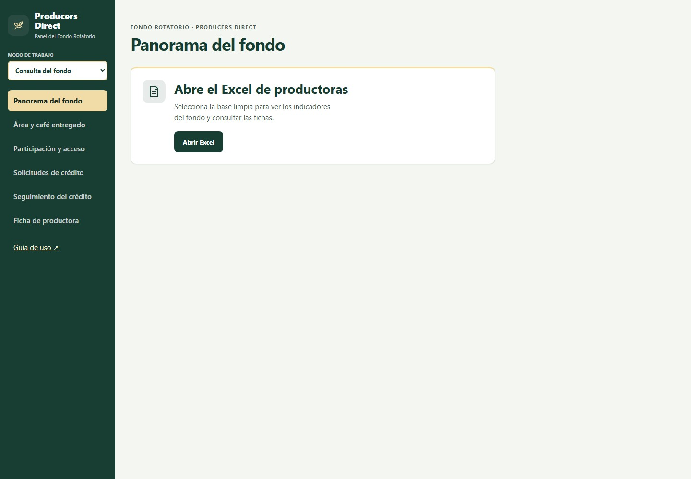
Consulta del fondo
Los filtros de cooperativa, distrito y grupo local se aplican a las cifras y gráficos de esta sección. Limpiar filtros vuelve a la carga completa.
- Panorama del fondo
- Total de productoras, monto solicitado, área de café en hectáreas y café entregado en quintales. Los gráficos comparan estos totales por distrito y se actualizan con los filtros de arriba; al seleccionar un distrito, comparan sus grupos locales. «Ver cifras» muestra los datos y cuántas productoras aportan a cada total.
- Área y café entregado
- Mediana de quintales por productora y relación entre área de café y entregas. Un punto de la dispersión corresponde a una productora con ambos valores.
- Participación y acceso
- Comparación de celular, lectoescritura, contacto, capacitación y servicios del hogar. Cada porcentaje usa las respuestas disponibles a esa pregunta. Una productora puede elegir varios canales de contacto.
- Solicitudes de crédito
- Distribución de montos y destinos solicitados. «Ver cifras» abre los valores del gráfico. El monto solicitado no equivale al desembolso.
- Seguimiento del crédito
- Elige el año, añade un Excel por vez, revisa sus columnas y confirma la carga antes de añadir otro. Cada archivo se puede quitar por separado. El tablero explica el contrato en esa pantalla; consulta también Formato y reglas.
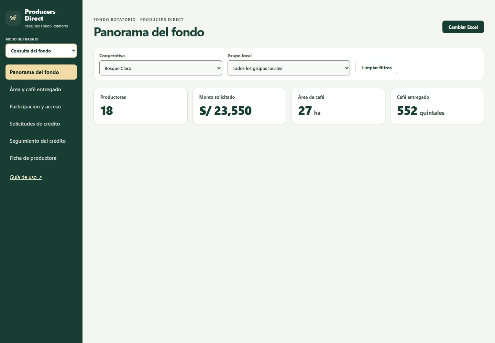
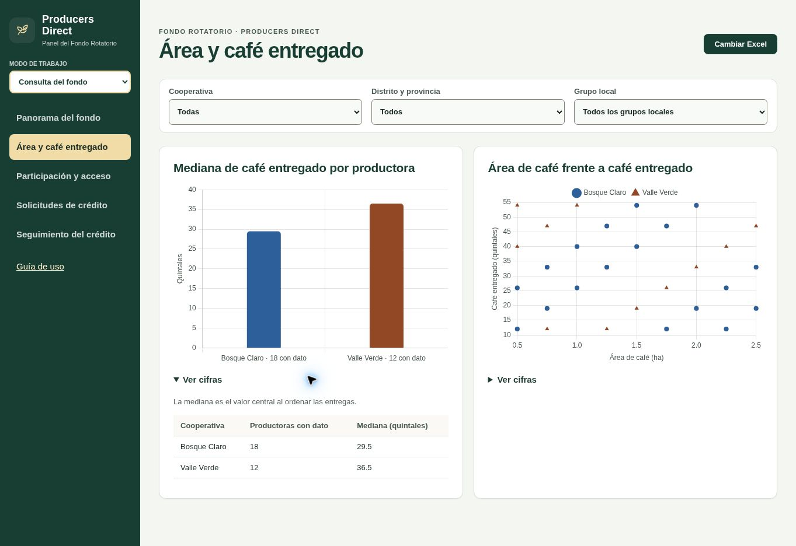
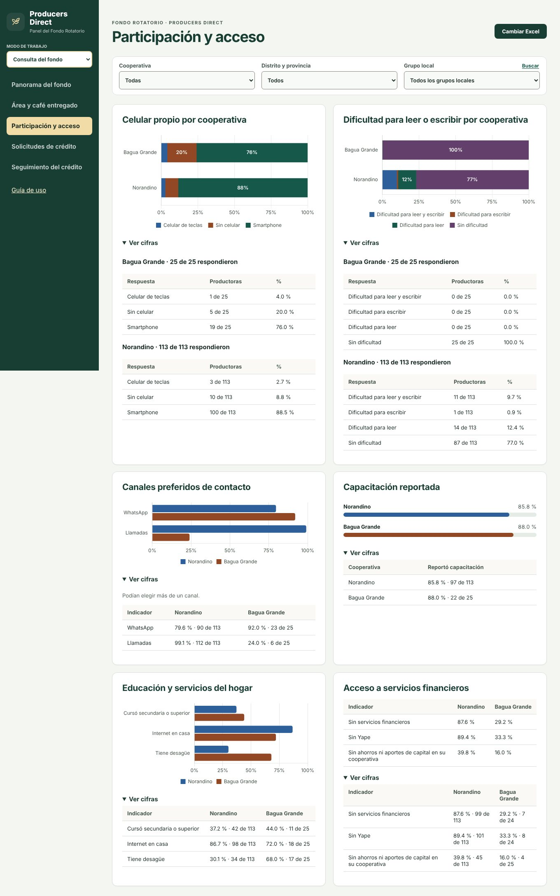
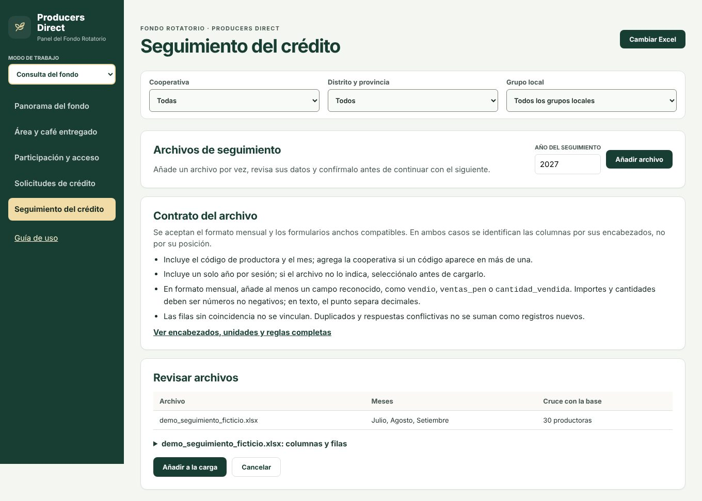
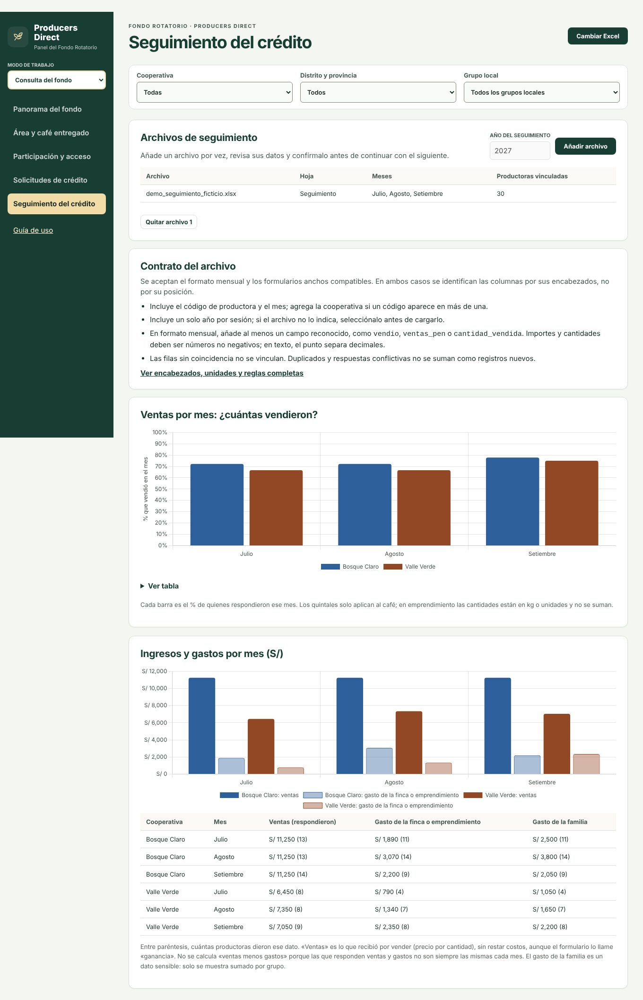
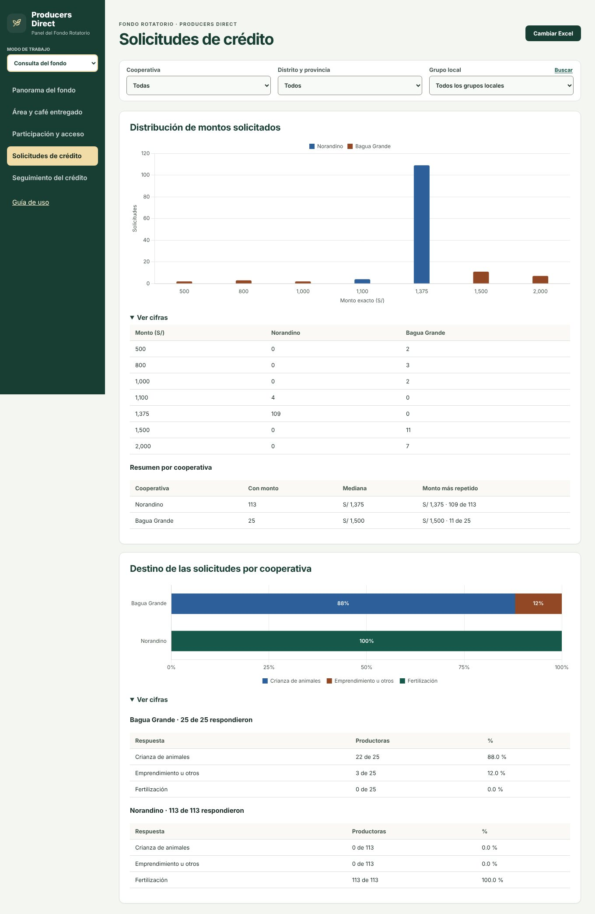
Equipo de campo
Selecciona Equipo de campo → Ficha de productora. Busca por código o elige una productora de la lista. Hay dos documentos:
- Ficha de visita (pestaña «Para la visita»): datos de la productora, finca y solicitud para que el coordinador prepare la visita.
- Reporte para la productora (pestaña «Para la productora»): resumen imprimible con producción, ingresos y solicitud. Compara cada valor con el de una productora típica de su cooperativa, que es el valor del medio: la mitad de las productoras tiene menos y la otra mitad más.
Selecciona el documento y pulsa Imprimir para imprimirlo o guardarlo como PDF.
En Registrar una visita, completa responsable y fecha. Para marcar un paso como hecho, añade fecha y evidencia. Guarda la visita y descarga el CSV antes de cerrar o cambiar de base.
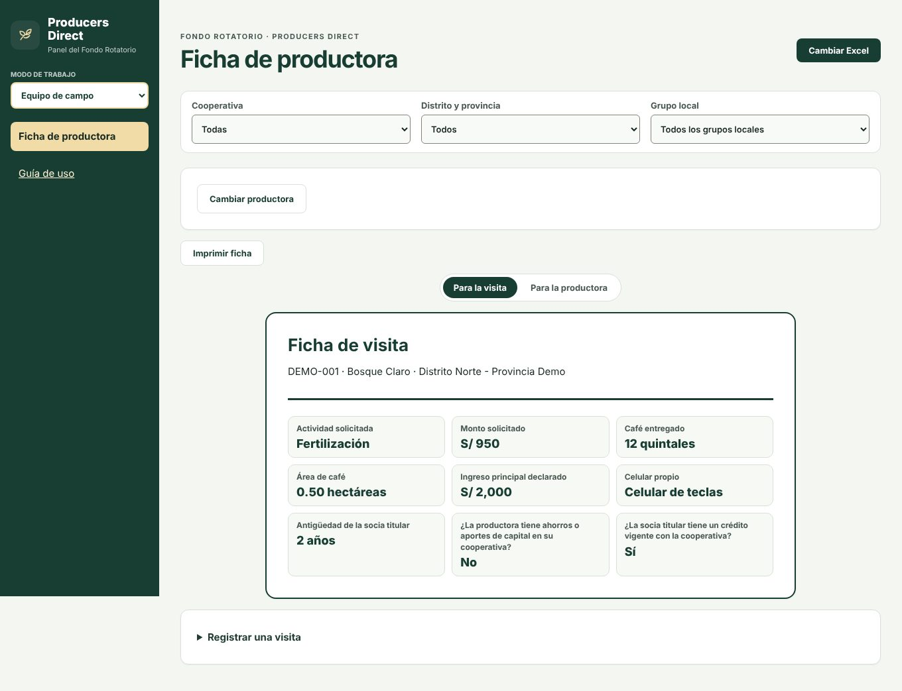
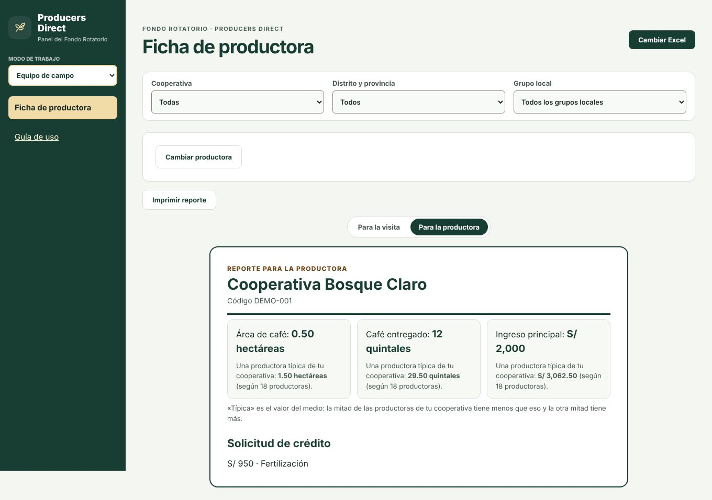
Equipo de datos
Resumen del Excel muestra hojas, columnas, registros incluidos y filas excluidas. La revisión comprueba columnas obligatorias, identificadores completos y únicos, encabezados repetidos y tipos de datos.
La tabla de campos separa valores válidos, vacíos y no válidos. Muestra promedio, mínimo y máximo para los campos numéricos; moda para categorías; y cantidad de códigos únicos para identificadores. «No incluida (opcional)» indica una columna que no estaba en el Excel. Las columnas adicionales se resumen por separado y no alimentan los gráficos.
Activa Solo campos por revisar para acortar la tabla. Pulsa un conteo de vacíos o valores no válidos para abrir los registros afectados. Un 0 y un «No» son valores, no vacíos.
Asignar columnas permite cambiar la hoja, la fila de encabezados y la correspondencia de los campos. Los números escritos como texto usan punto decimal, por ejemplo 1,500.25.
Registros permite buscar por código o cooperativa, recorrer filas y descargar la carga completa en CSV. La búsqueda no limita la descarga.
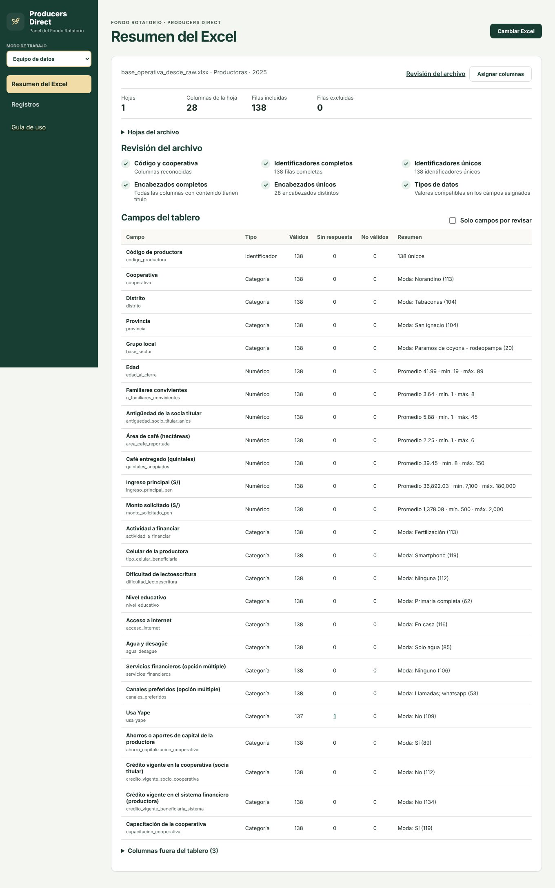
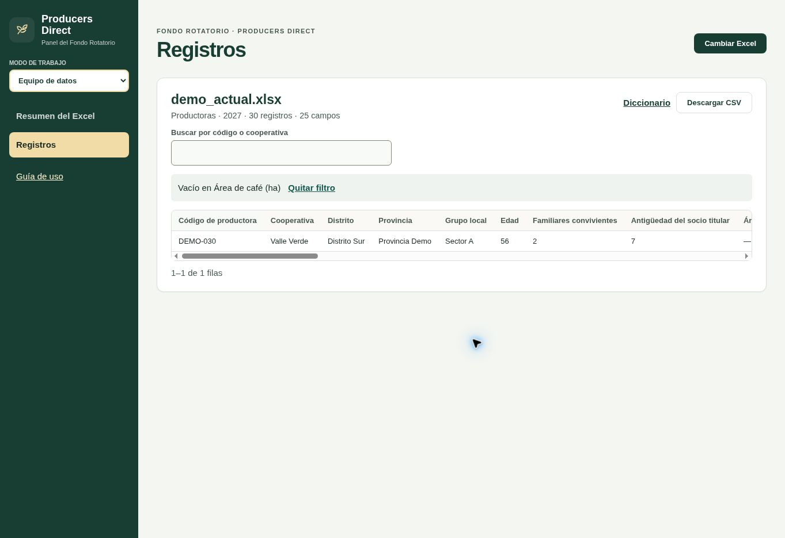
Casos de uso
Recorridos concretos con los botones y secciones del tablero. Todos empiezan con Abrir Excel.
Caso 1. Preparar la visita a una productora
Quién: coordinador de campo. Objetivo: llegar a la visita con los datos de la productora y su solicitud.
- Pulsa «Abrir Excel» y elige la base.
- En «Modo de trabajo» elige «Equipo de campo» y abre «Ficha de productora».
- Escribe el código en «Buscar por código de productora» y selecciónala.
- En «Para la visita» revisa actividad solicitada, monto, café, área y celular.
- En «Registrar una visita» anota responsable, fecha y evidencia de cada paso, y descarga el CSV antes de cerrar.
Caso 2. Entregar el reporte a una productora
Quién: equipo de campo. Objetivo: que la productora entienda su situación frente a las demás de su cooperativa.
- Abre la ficha de la productora como en el caso anterior.
- Cambia a la pestaña «Para la productora».
- Lee con ella las tres tarjetas: su valor y el de una productora típica de su cooperativa.
- Pulsa «Imprimir reporte» para imprimirlo o guardarlo como PDF.
Caso 3. Elegir cómo comunicarse con las productoras
Quién: coordinación de ROTA. Objetivo: decidir el canal y el formato de los avisos.
- En «Consulta del fondo» abre «Participación y acceso».
- Filtra por cooperativa si quieres comparar.
- Revisa celular, dificultad de lectoescritura y canales preferidos.
- Abre «Ver cifras» para citar las cantidades exactas en un informe.
Caso 4. Revisar qué se solicita y cuánto
Quién: coordinación de ROTA. Objetivo: ver el destino y los montos de las solicitudes.
- Abre «Solicitudes de crédito».
- Revisa el destino (Fertilización, Crianza de animales, Emprendimiento u otros).
- Revisa los montos más repetidos y la mediana.
- Recuerda que el monto solicitado no equivale al desembolso.
Caso 5. Dar seguimiento después del desembolso
Quién: equipo de seguimiento. Objetivo: saber quién aplicó el fertilizante y quién llevó café.
- Abre «Seguimiento del crédito» y escribe el año.
- Elige el Excel de seguimiento de una cooperativa y revisa sus columnas.
- Pulsa «Añadir a la carga»; repite con la otra cooperativa.
- Lee los porcentajes por cooperativa y abre «Ver cifras» para ver cuántas respondieron.
- Consulta las tablas de motivos para priorizar las visitas.
Caso 6. Comprobar un Excel nuevo antes de usarlo
Quién: responsable de datos. Objetivo: asegurar que el archivo cumple el contrato.
- Abre el Excel y entra en «Equipo de datos → Resumen del Excel».
- Revisa las seis comprobaciones y las filas excluidas.
- Activa «Solo campos por revisar» y pulsa un conteo de vacíos para ver los registros afectados.
- Si un encabezado difiere, usa «Asignar columnas».
- Corrige el archivo en origen y vuelve a abrirlo si hay valores no válidos.
Ayuda
- El Excel no abre
- Revisa las columnas de código y cooperativa y el formato del contrato. El límite del archivo es 15 MB.
- No aparece una productora
- Limpia los filtros y busca su código en Registros. Revisa también las filas excluidas en Resumen del Excel.
- Un valor aparece vacío o no válido
- Revisa su columna y fila de origen, corrige el Excel y vuelve a abrirlo. No se rellenan celdas automáticamente.
Para consultas del proceso, contacta a la coordinación de ROTA. Para columnas o formatos, al responsable de datos de Producers Direct. Los archivos se procesan en el navegador y no se guardan entre sesiones.